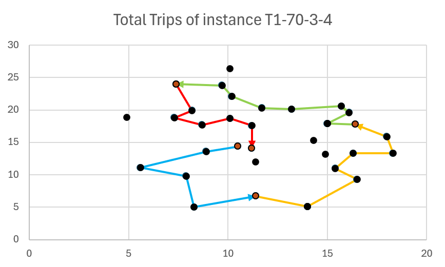
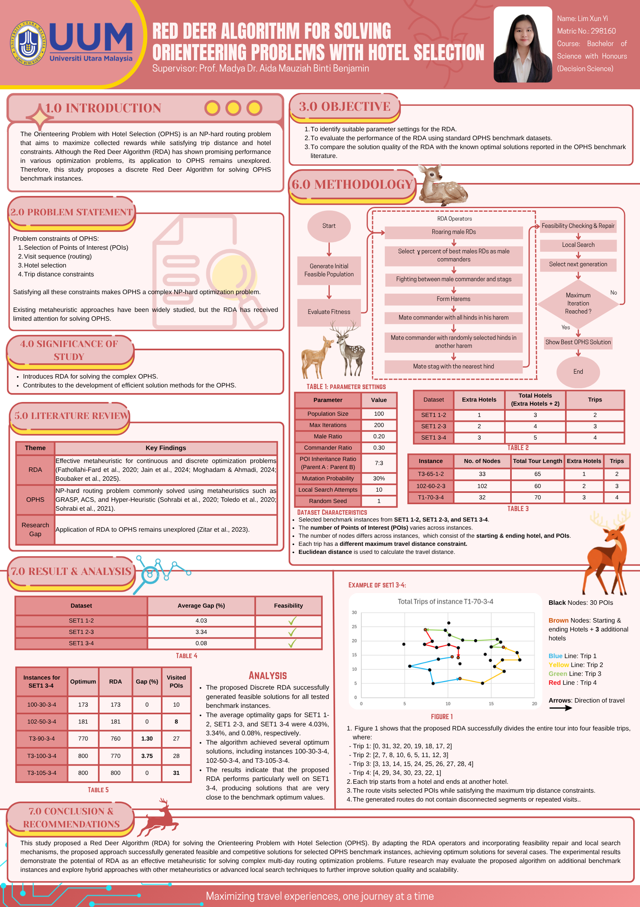
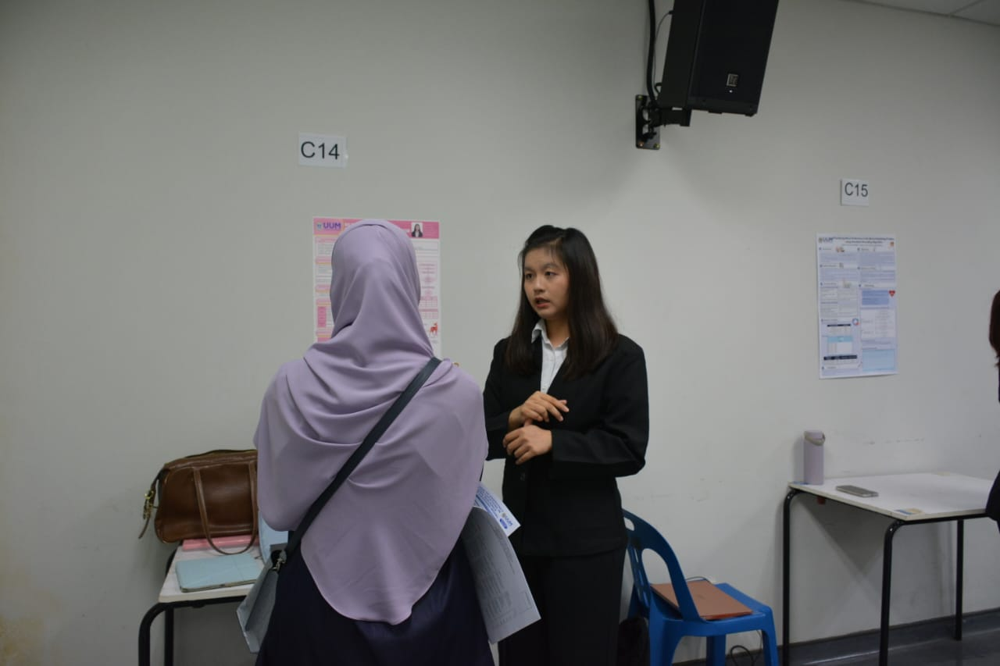
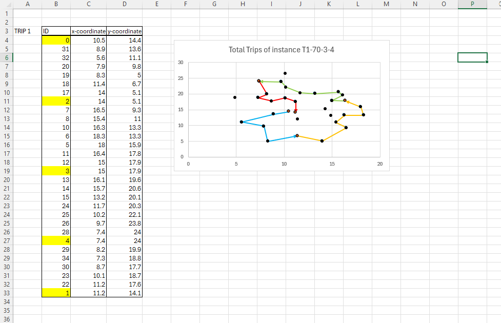

FIELD REPORT · FINAL YEAR PROJECT
Hello, I'm
Lim Xun Yi
Decision Science Student
A Discrete Red Deer Algorithm for solving the Orienteering Problem with Hotel Selection — charting feasible, high-reward multi-day routes through constrained terrain.
Explore the Route01 — ABOUT ME
Who's Behind the Map
 LXY · MATRIC 298160
LXY · MATRIC 298160
Biography
I am a final-year Bachelor of Science with Honours (Decision Science) student at Universiti Utara Malaysia. Since secondary school I have been drawn to mathematics and problem-solving, which led me to pursue a degree that blends statistics, computer science, and business analytics. Over the past three years, my coursework and personal projects have shaped my current focus on optimization and data analytics. Throughout my studies, I have developed strong skills in Python programming, mathematical modelling, SQL, Tableau, and optimization techniques.
Research Interests
- Metaheuristic Algorithms
- Operations Research
- Artificial Intelligence
- Python Programming
- Optimization
- Data Analytics
Career Aspirations
Looking ahead, I aspire to build a career as a Data Analyst or Operations Research Analyst, applying optimization and data-driven decision-making to solve real-world logistics, tourism, and supply chain problems. In the next few years, I hope to pursue professional certifications in data analytics and gain hands-on industry experience, with a longer-term goal of eventually pursuing postgraduate studies in Artificial Intelligence or Operations Research so that I can continue developing algorithms that create practical, measurable impact for organisations and communities.
02 — THE PROJECT
Final Year Project Brief
Problem
The Orienteering Problem with Hotel Selection (OPHS) is an NP-hard routing problem that aims to maximize collected rewards while satisfying trip distance and hotel constraints. Satisfying every constraint at once makes OPHS a genuinely hard optimization problem:
- Selection of Points of Interest (POIs)
- Visit sequence (routing)
- Hotel selection
- Trip distance constraints
Research Gap
OPHS is commonly solved with metaheuristics such as GRASP, ACS, and Hyper-Heuristic (Sohrabi et al., 2020; Toledo et al., 2020; Sohrabi et al., 2021). The Red Deer Algorithm has shown strong results elsewhere, but its application to OPHS remains unexplored (Zitar et al., 2023).
Objectives
- Identify suitable parameter settings for the RDA.
- Evaluate the performance of the RDA using standard OPHS benchmark datasets.
- Compare RDA solution quality with the known optimal solutions reported in the OPHS benchmark literature.
Methodology
Adapt the Red Deer Algorithm into a discrete optimization framework with feasibility repair, local search, and benchmark evaluation.
Significance
- Introduces RDA as a solution method for the complex OPHS.
- Contributes to the development of efficient solution methods for OPHS.
03 — PRIOR ART
Literature Review
A short survey of where the Red Deer Algorithm and OPHS currently stand in the literature.
| Theme | Key Findings |
|---|---|
| RDA | Effective metaheuristic for continuous and discrete optimization problems (Fathollahi-Fard et al., 2020; Jain et al., 2024; Moghadam & Ahmadi, 2024; Boubaker et al., 2025). |
| OPHS | NP-hard routing problem commonly solved using metaheuristics such as GRASP, ACS, and Hyper-Heuristic (Sohrabi et al., 2020; Toledo et al., 2020; Sohrabi et al., 2021). |
| Research Gap | Application of RDA to OPHS remains unexplored (Zitar et al., 2023) — the gap this project addresses. |
04 — RESEARCH JOURNEY
The Trail So Far
My Final Year Project journey from topic selection until final evaluation, waypoint by waypoint.
Literature Review
Studied the Orienteering Problem with Hotel Selection (OPHS), benchmark datasets, and existing metaheuristic algorithms to understand the research problem.
Experience: Reading dozens of journal papers was overwhelming at first, but organising them into a comparison table helped me clearly identify the research gap for the Red Deer Algorithm.
Understanding Red Deer Algorithm
Learned the biological inspiration of the Red Deer Algorithm, including roaring, commander selection, fighting, harem formation, mating, and mutation.
Experience: Mapping each biological behaviour to a mathematical operator was the most conceptually challenging part, but sketching diagrams by hand made the logic much clearer before I started coding.
Python Implementation
Implemented a discrete version of the Red Deer Algorithm in Python and designed suitable solution representations for OPHS.
Experience: My first working version produced routes that ignored hotel constraints entirely, which taught me the importance of designing the solution representation carefully before writing the search logic.
Feasibility Repair
Developed repair mechanisms to ensure all generated routes satisfied hotel connectivity and trip distance constraints.
Experience: Debugging infeasible routes was tedious and required tracing through many test cases, but it strengthened my patience and my debugging skills significantly.
Parameter Tuning
Experimented with different parameter settings to improve solution quality and convergence performance.
Experience: Running repeated experiments with different population sizes and mutation rates showed me how sensitive metaheuristics are to parameter choices, and how important it is to record every trial systematically.
Benchmark Evaluation
Evaluated the proposed algorithm using OPHS benchmark datasets and compared the obtained solutions with benchmark optimum values.
Experience: Seeing SET1 3-4 land within 0.08% of the best-known solutions was the most rewarding moment of the project, validating months of implementation and tuning.
05 — FIELD LOG
Weekly Activity Log
A week-by-week record of the tasks I carried out while completing my Final Year Project.
| Week | Focus Area | Activities Carried Out |
|---|---|---|
| 01–02 | Topic Selection | Met with supervisor to discuss project scope; identified OPHS as the research problem and Red Deer Algorithm as the proposed method. |
| 03–04 | Literature Review | Reviewed journal articles on OPHS and metaheuristic algorithms daily; compiled a summary table of related work. |
| 05–06 | Algorithm Study | Studied the biological behaviour of red deer and mapped each behaviour to a proposed algorithmic operator; drafted the pseudocode. |
| 07–09 | Python Implementation | Coded the population initialisation, fitness function, and core Red Deer Algorithm operators in Python; tested on small sample instances. |
| 10–11 | Feasibility Repair | Built and tested repair functions for hotel connectivity and trip distance constraints; fixed bugs found during daily test runs. |
| 12–13 | Parameter Tuning | Ran experiments with different population sizes, mutation rates, and commander ratios; logged results after each run. |
| 14–15 | Benchmark Evaluation | Executed the algorithm on all 60 SET1 benchmark instances; compared results against benchmark optimum values. |
| 16 | Documentation | Prepared the FYP report, poster, and this e-portfolio; met with supervisor for final review. |
06 — INSTRUMENT PANEL
Research Dashboard
Key highlights of my Final Year Project.
0
Benchmark Instances (SET1)
0
Maximum Iterations
Python
Programming Language
100%
Feasible Solutions
07 — HOW IT NAVIGATES
Algorithm Workflow
The proposed Discrete Red Deer Algorithm for solving the Orienteering Problem with Hotel Selection.
Generate Initial Population
Generate feasible OPHS solutions randomly, then evaluate fitness for every candidate solution.
Roaring Male RDs
Male red deer solutions "roar" to improve their positions in the search space.
Select Male Commanders
Select the top γ percent of best male RDs as commanders.
Fighting
Commanders fight against stags to reinforce dominance and refine solutions.
Harem Formation
Form harems and assign hinds to commanders according to their relative power.
Mating
Mate each commander with all hinds in his own harem, with randomly selected hinds in another harem, and mate each stag with its nearest hind.
Feasibility Checking & Repair
Check offspring feasibility and repair routes that violate hotel connectivity or distance constraints.
Local Search
Apply local search to improve promising solutions before selecting the next generation.
Select Next Generation
Carry the fittest solutions forward and repeat until the maximum iteration is reached.
Best Solution
Return the best feasible OPHS solution found across all iterations.
08 — TERRAIN DATA
Benchmark Dataset
The proposed algorithm was evaluated on the standard OPHS benchmark dataset (SET1). Each group differs in the number of hotels, trips, and Points of Interest (POIs); Euclidean distance is used to calculate travel distance.
SET1 1–2
- 20 benchmark instances
- 3 total hotels (1 extra)
- 2 trips
- Sample: T3-65-1-2 — 33 nodes, tour length 65
SET1 2–3
- 20 benchmark instances
- 4 total hotels (2 extra)
- 3 trips
- Sample: 102-60-2-3 — 102 nodes, tour length 60
SET1 3–4
- 20 benchmark instances
- 5 total hotels (3 extra)
- 4 trips
- Sample: T1-70-3-4 — 32 nodes, tour length 70
09 — INSTRUMENT SETTINGS
Algorithm Parameters
| Parameter | Value |
|---|---|
| Population Size | 100 |
| Maximum Iterations | 200 |
| Male Ratio | 0.20 |
| Commander Ratio | 0.30 |
| POI Inheritance Ratio (Parent A : Parent B) | 7 : 3 |
| Mutation Probability | 30% |
| Local Search Attempts | 10 |
| Random Seed | 1 |
10 — SURVEY FINDINGS
Experimental Results & Analysis
60
Benchmark Instances
3
Dataset Groups
100%
Feasible Solutions
Average Gap by Dataset
| Dataset | Average Gap (%) | Feasibility |
|---|---|---|
| SET1 1-2 | 4.03 | |
| SET1 2-3 | 3.34 | |
| SET1 3-4 | 0.08 |
Detailed Results for SET1 3–4
| Instance | Optimum | RDA | Gap (%) | Visited POIs |
|---|---|---|---|---|
| 100-30-3-4 | 173 | 173 | 0 | 10 |
| 102-50-3-4 | 181 | 181 | 0 | 8 |
| T3-90-3-4 | 770 | 760 | 1.30 | 27 |
| T3-100-3-4 | 800 | 770 | 3.75 | 28 |
| T3-105-3-4 | 800 | 800 | 0 | 31 |
11 — CONCLUSION & RECOMMENDATIONS
Closing the Loop
This study proposed a Red Deer Algorithm (RDA) for solving the Orienteering Problem with Hotel Selection (OPHS). By adapting the RDA operators and incorporating feasibility repair and local search mechanisms, the proposed approach successfully generated feasible and competitive solutions for selected OPHS benchmark instances, achieving optimum solutions in several cases. The experimental results demonstrate the potential of RDA as an effective metaheuristic for solving complex multi-day routing optimization problems.
Future research may evaluate the proposed algorithm on additional benchmark instances and explore hybrid approaches with other metaheuristics or advanced local search techniques to further improve solution quality and scalability.
12 — MAP INSERT
Route Visualization
Example of SET1 3-4, instance T1-70-3-4: the proposed RDA divides the entire tour into four feasible trips.

Black nodes: 30 POIs
Brown nodes: starting & ending hotels + 3 additional hotels
Trip 1 · Trip 2 · Trip 3 · Trip 4
Each trip starts from one hotel and ends at another while visiting selected POIs within the maximum trip distance constraint. The generated routes contain no disconnected segments or repeated visits.
13 — FIELD PHOTOS
Project Gallery





14 — GEAR CARRIED
Skills Developed
- Python
- Optimization
- Metaheuristics
- Data Analytics
- Research
- Academic Writing
15 — LOOKING BACK
Personal Reflection
This Final Year Project has significantly strengthened my knowledge of optimization, algorithm design, and scientific research. Throughout the project, I learned how to transform a continuous metaheuristic into a discrete algorithm suitable for solving the Orienteering Problem with Hotel Selection. I also gained valuable experience in Python programming, debugging, parameter tuning, experimental evaluation, and academic writing. These experiences have enhanced both my technical abilities and my confidence in conducting independent research.
16 — NEXT WAYPOINTS
Future Work
17 — END OF REPORT
Contact
Name Lim Xun Yi
Matric No. 298160
Email limxunyi0653@gmail.com
University Universiti Utara Malaysia
Programme Bachelor of Science wuth Honours (Decision Science)
Supervisor Prof. Madya Dr. Aida Mauziah Binti Benjamin